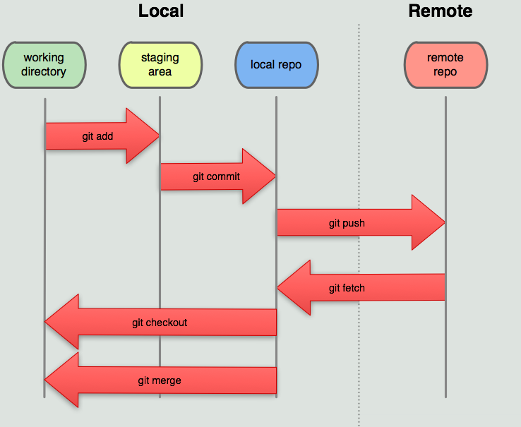

Formation Git
Système de gestion de version décentralisé
Partie 2 - Travail collaboratif
Présenté par Jonathan Martel
Plan de contenu
Révision de la base
# Cloner un repository (juste si le dossier n'est pas déjà en local)
> git clone URL_DU_DEPOT_DISTANT
# Vérifier l'état du dépot (repository)
> git status
# Ajout du fichier à l'index (staging)
> git add fichier.ext
> git add . #Pour tous les fichiers modifiés
# Faire un commit
> git commit -m "Message clair"
# Permet d'ajouter les fichiers modifiés et effacés automatiquement
# au staging (sauf nouveaux fichiers)
> git commit -a -m "Message clair"
# Vérifier que le dépôt distant et local sont à jour
> git remote update # Met à jour les informations du dépot
> git status # Affiche les différences entre le local et le distant
# Seulement si la différence entre local et distant n'apparait pas
> git push -u origin master
# Récupérer les modifications
> git fetch origin master #Recupère les données distantes
> git branch -r #Liste des branches distantes
> git merge origin/master #Fusionne les branches
# Alternative
> git pull origin master # fetch et merge ensemble
# Envoyer les commits sur le distant
> git push origin master # Envoie les modifications vers le distant
En bref :
Avant de travailler
> git remote update # Met à jour les informations du dépot
> git status
# Si remote est en retard (moins nécessaire)
> git push origin master # Met le dépôt distant à jour
# Si local est en retard (très important)
> git pull origin master # Met le dépôt local à jour
travail, travail, travail...
> git add fichiers_modifies # ou "git add .", pour tous les fichiers
> git commit -m "Voici ce que j'ai fait"
...jusqu'à la fin d'une période de travail
> git add .
> git commit -m "Voici ce que j'ai ajouté ou ce que j'ai corrigé"
> git push origin master # Met le dépôt distant à jour
Git en équipe
- Permet de favoriser le partage de ressources
- Outils de coordination et de suivi des développements
- Architecture décentralisée et sécuritaire
Architecture d'un projet utilisant un dépôt centralisé
Architecture d'un projet Git

SVN vs Git
- SVN est vulnérable à la corruption du code
- SVN demande une planification de backup plus avancées
- SVN fait plus de charge sur le réseau
- SVN exige plus d'espace disque
- SVN dépend de l'intégrité complète du projet
- SVN restreint le travail collaboratif "non centralisé"
Différents workflow Git
Dépôt centralisé
Le processus de travail est similaire à celui de SVN. Il consiste à travailler avec un seul dépôt central qui est distant (remote) et à mettre à jour à tour de rôle le dépôt. À chaque mise à jour, les autres récupèrent les mises à jour avant de soumettre les leurs.
Par branches de fonctionnalités/développeurs
À partir d'un dépôt centralisé, chaque fonctionnalité est développée sur une branche spécifique par les développeurs. Chacun travaille sur une branche unique à lui.
Forking workflow
Chaque développeur fork le projet sur son propre dépôt distant. Ensuite il développe les fonctionnalités en utilisant un modèle de branche personnalisé (au besoin). Lorsqu'il a terminé, il fait une requête de fusion sur le dépôt initiale (upstream). Le chef du projet ou les développeur séniors font la fusion sur le dépôt initial.
- Chaque développeur fork le dépôt à partir de l'interface du serveur, ils possèdent donc tous un dépôt distant individuel (privé)
- Ils acquièrent leur dépôt distant (clone)
- Les développeurs travaillent comme bon leur semble (branch, add, commit, push, merge, etc)
- Quand tout fonctionne, ils créent une requête de fusion sur le serveur (pull request sur github ou bitbucket)) avec le dépôt initiale (upstream) pour une branche spécifique
- Selon les droits du développeur, il peut lui-même gérer la requête et fusionner la branche ou bien un autre fera le travail de fusion (après correction et discussion avec le développeur)
- Une fois le dépôt initial mis à jour, les autres développeurs récupèrent la mise à jour (fetch) et fusionne leurs branches de développement locales (merge) et distantes (push)
- Personne ne travaille directement sur le dépôt central (upstream)
Gitflow - Vincent Driessen

Gitflow est un modèle de travail qui peut s'appliquer aux autres structures (centralisées, branche de fonction et forking). Il consiste à travailler sur de multiples branches et réserver la branche master pour les versions finales (release).
Gitlab flow

Modèle de développement proposé par Gitlab. Il propose trois branches et un modèle de travail linéaire (dev, pre-prod, prod) qui convient à de nombreux projets
Configuration nécessaire pour le travail collaboratif
- Créer ou avoir un compte github par membre
- Créer une organisation (github)
- Ajouter les membres à l'équipe (avec les droits)
- Initialiser le dépôt de l'équipe (vide, à partir d'un fork ou d'un dépot local existant) (upstream)
- Chaque membre "fork" le dépôt de l'équipe (upstream)
- Chaque membre clone leur dépot distant sur le local
- Configurer le upstream sur le dépôt local
- Vous êtes maintenant prêt à travailler et partager votre code (code, add, commit, push, pull, etc)!
Récupérer la dernière mise à jour du projet
- S'assurer que tous les changements sont commités
- S'assurer que le local et le remote sont synchronisés (pull/push avec origin)
- Faire un pull de l'upstream
- Corriger les conflits et finaliser la fusion (add, commit, merge)
- Tester le code
- Mettre à jour son remote
> git status # Pour s'assurer que le dépot local est propre
# Récupérer les modifications de upstream
> git pull upstream master #Recupère les données distantes de upstream
# Si le merge ne se fait pas automatiquement,
# réglez les conflits dans le code
# Testez et dépannez le code
# Quand tout est fonctionnel, terminé la fusion
> git add .
> git commit
# mettre à jour son remote
> git push origin master # Envoie les modifications vers le distant
Ajouter son code au projet de l'équipe
- S'assurer que le local et le remote sont synchronisés (pull/push avec origin)
- Récupérer la dernière mise à jour de upstream (pull upstream)
- Corriger les conflits, le cas échéant (add, commit, merge, push)
- Tester le fonctionnement du site (important!)
- Mettre à jour son remote (git push)
- Sur Github : créer une demande de pull request
- Sur Github : accepter le pull request (auto-merging)
- Aviser les autres membres de l'ajout
> git status # Pour s'assurer que le dépot local est synchronisé
# Si local en retard
> git pull origin master # Recupère les données distantes
# Si local en avance
> git push origin master # Envoie les données vers origin
# Récupérer les modifications de upstream
> git pull upstream master # Si présent, corriger les conflits
# Faire les tests (important!)
# mettre à jour son remote
> git push origin master
# Sur github, faire le pull-request et aviser les membres de l'ajout